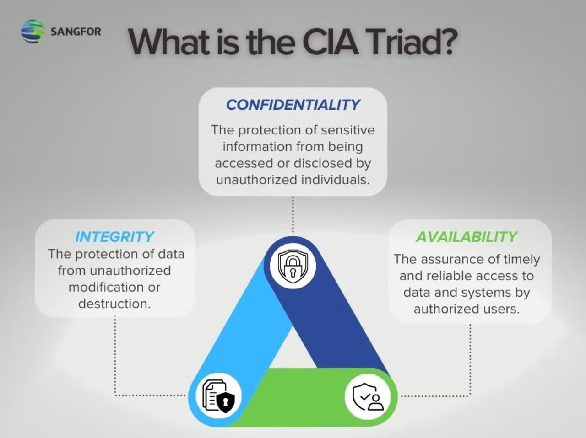
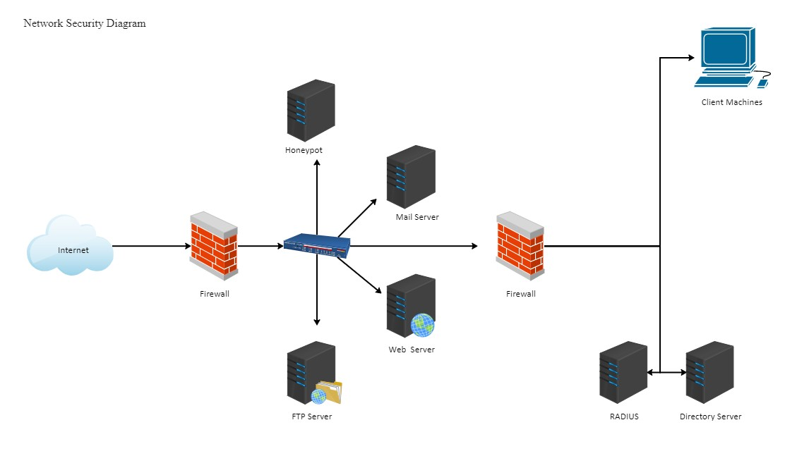

Introduction
Network security is one of the most important parts of technology today because it
protects personal information, business data, and online communication. As technology
continues to advance, hackers and cyber threats have also become more complex.
Understanding how network security works helps people and organizations stay safe in
the digital world. In this lab, I reviewed three articles from IBM, Fortinet, and
NordLayer that explain what network security is, why it matters, and how it can be
improved. Each source highlights different tools and methods that help prevent attacks
and keep systems secure. Learning about these ideas is important for anyone who uses
technology in their daily life or career.

Network Security Summary
Source 1: IBM – “What is Network Security?”
IBM’s article “What Is Network Security?” explains how organizations protect their computer systems from hackers and cyber threats. It defines network security as methods used to prevent unauthorized access, misuse, or theft of data across computer networks. The article discusses different types of attacks such as ransomware, phishing, and denial-of-service (DDoS) that can damage or disrupt networks. IBM highlights the use of tools like firewalls, encryption, and access controls to strengthen protection. It also explains the idea of a “zero-trust” framework, where no one is automatically trusted on a network. The article mentions that artificial intelligence helps detect strange or harmful activity faster than humans. IBM also emphasizes that network security must continuously evolve because new threats appear every day. Overall, the source makes it clear that protecting data requires constant attention and strong security practices.
Source 2: Fortinet – “What is Network Security? Definition & Types”
Fortinet’s article “What Is Network Security? Definition & Types” talks about how network security protects both data and the systems people use every day. It states that network security includes “any activity designed to protect the usability and integrity of your network and data.” The article explains that the goal of network security is to protect information through confidentiality, integrity, and availability, also known as the CIA triad. It gives examples of tools like firewalls, intrusion prevention systems, and encryption that help stop hackers and protect important data. Fortinet also describes how dividing networks into smaller parts, called segmentation, can limit the damage caused by attacks. The article explains that every organization should have several layers of security to stay prepared for different kinds of threats. It also mentions that cyberattacks continue to increase, making strong protection more important than ever. This source provides a helpful explanation of the key parts and importance of network security for modern systems.

Source 3: NordLayer – “Network Security 101: Understanding the Basics”
NordLayer’s article “Network Security 101: Understanding the Basics” gives an easy overview of how to keep computer networks safe. It explains that network security is a set of technologies and processes designed to protect the integrity, confidentiality, and accessibility of computer networks and data. The article goes over basic tools like VPNs, firewalls, and intrusion detection systems that prevent hackers from breaking in. It also mentions that threats like phishing and malware keep changing, so people must update their protection regularly. NordLayer talks about how human mistakes can be one of the biggest cybersecurity risks and can lead to successful attacks. It explains that remote work and cloud systems make network security even more important today because people access networks from many different locations. The article also stresses that awareness and training help reduce risks by teaching users how to avoid common cyber threats. Overall, NordLayer’s article is a simple and clear introduction that helps readers understand the basics of network security.

Conclusion
After reviewing all three sources, network security plays a key role in protecting data and maintaining trust online. The articles agree that strong defenses like firewalls, encryption, and access control are essential. They also emphasize the need for updating systems and staying aware of risks. Network security is always evolving, so ongoing learning is important. Overall, this research helped me understand how network security protects the modern world and why it is essential for individuals and organizations. Additionally, these sources highlight that cybersecurity is not just a technical issue but a shared responsibility that requires awareness from every user. As cyber threats continue to grow more complex, organizations must stay proactive by adopting new technologies and reinforcing security best practices. The research also shows that strong security frameworks can reduce the impact of attacks and help maintain business continuity. By combining advanced tools with informed decision-making, both individuals and companies can strengthen their defenses. Ultimately, understanding network security helps prepare us for the challenges of an increasingly digital future.